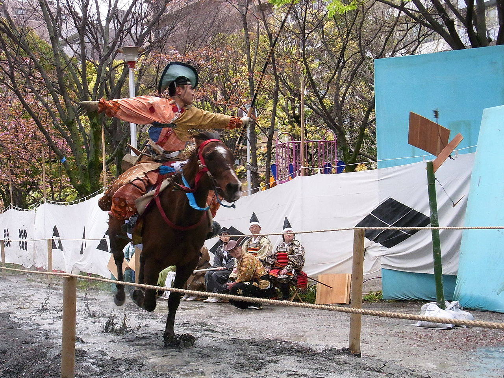
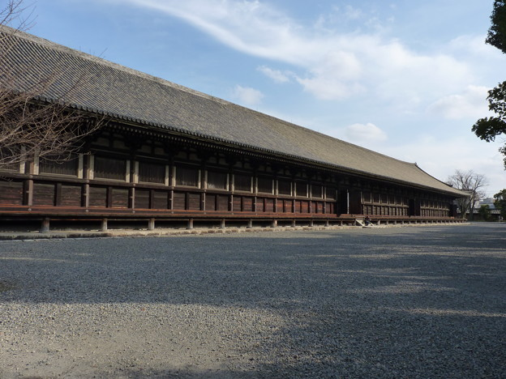

弓の世界
弓を使う競技や儀式は数多く存在します。アーチェリーとの比較をしていくのも 面白いですが、ここでは古くからある流鏑馬と三十三間堂の通し矢を紹介していきたいと思います。
流鏑馬
みなさん一度はニュースなどで見たことがあるのではないでしょうか。鎌倉や京都で毎年正月に行われている流鏑馬（やぶさめ）。馬に
跨り疾走しながら的に矢を中てる姿はえも言われぬ趣がありますね。
流鏑馬を含む弓馬礼法は896年に制定されました。その後、時代の流れによって様々な変化を得て,現在は神社の神事として日本各地で盛んに行われ
ています。
流鏑馬の矢は弓道で普段使っている矢ではなく、鏑矢と呼ばれる先端が丸まっているものを使用します。
また、衣装も弓道をするときに比べると結構派手ですね。

こちら
の動画を見ると、的との距離が近いからすごい簡単に当てているように見えますよね。私自身が経験した訳ではないのであまり偉そうな事は言え
ませんが実際はとても難しいもだと思います。
弓道は正しい姿勢で引いても中々的に中りません。その上、馬上で両手を離してバランスを保たせるなんて簡単ではないでしょうし、さらに弓を弾く動作ま
で加えたらもう訳が分からなくなりそうです。
自分で挑戦しようとすると、弓道と乗馬の両方をある程度やらないといけないので、神社に行って実物を見る方が良いと思います。
有名どこならやはり京都か鎌倉でしょうか。お正月や季節の区切りごとに行われる神事でやるので、神社の年間行事予定表をみれば日付は分かると思います。
私は鎌倉で見たことがありますが、やはりテレビで見るよりも迫力がありましたね。肌に当たる風や音、雰囲気がとても神聖なものに感じました。機会があ
れば、皆さんも是非行かれると良いと思います。
通し矢
京都を良く知る人には「三十三間堂」という言葉から弓矢が連想されるのではないでしょうか。通し矢とはこの三十三間堂で行なわれる弓術の一種目で
堂射（どうしゃ）、堂前（どうまえ）などともいわれています。
三十三間堂（京都蓮華王院）の西側軒下を南から北に矢を射通す競技です。下の画像が三十三間堂です。

いくつかの種目がありますが、一昼夜に南端から北端に射通した矢の数を競う「大矢数」が有名です。
江戸時代前期に最盛期となり、多くの射手が挑戦しました。ちなみに射通すというのはこの場合、
矢を天井や柱にぶつけずに端か端まで届かすということです。
起源は諸説ありますが、保元の乱の頃（1156年頃）に熊野の蕪坂源太という者が三十三間堂の軒下で
射通したのが始まり言われていますが正確なことはわかっていません。
記録として残されているものとして最古のものは慶長11年（1606年）の朝岡平兵衛が最初です。
彼は100本中51本を通し、その後多くの射手が記録に挑戦していきました。
しかし、弓矢の整備等で多額の費用が掛かるため、藩の援助がないと挑戦することは難しかった
そうです。戦の江戸の時代、各藩の名誉と誇りを懸けた戦いがここでは行なわれていました。
最終的に、貞享3年（1686年）4月27日には紀州藩の和佐範遠が総数13053本中通し矢8133本で天下一となりました。これ以降挑戦者は減少していきました。また、三十三間堂が
浅草にも作られると、こちらでも通し矢が行なわれていたみたいです。
明治以降になるとほとんど行なわれず、現在では毎年一月に大会が開催されていますが違う形式なので本物の通し矢見ることは出来なくなっています。
また、新成人向けのイベントも毎年行なわれているみたいです。興味がある方は是非行ってみて、可能なら参加してみるのもありだと思います。
出典・脚注
参考資料
・『弓道 - Wikipedia』https://ja.wikipedia.org/wiki/%E5%BC%93%E9%81%93 (2016年7月アクセス)
・『流鏑馬 - Wikipedia』https://ja.wikipedia.org/wiki/%E6%B5%81%E9%8F%91%E9%A6%AC (2016年7月アクセス)
・『通し矢 - Wikipedia』https://ja.wikipedia.org/wiki/%E9%80%9A%E3%81%97%E7%9F%A2 (2016年7月アクセス)
・『三十三間堂 - Wikipedia』https://ja.wikipedia.org/wiki/%E4%B8%89%E5%8D%81%E4%B8%89%E9%96%93%E5%A0%82 (2016年7月アクセス)
画像引用
・Google画像検索『流鏑馬』『三十三間堂』(全てライセンスフリーのものを使用しています。)
動画URL
・葵祭「流鏑馬神事」：https://www.youtube.com/watch?v=-7vs-ZuIViY